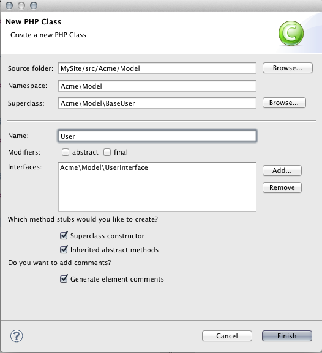
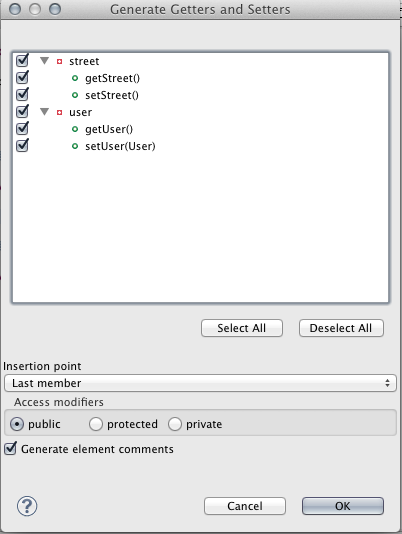
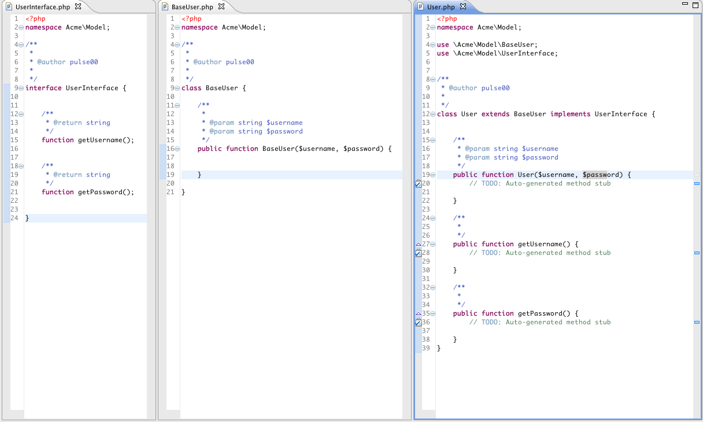
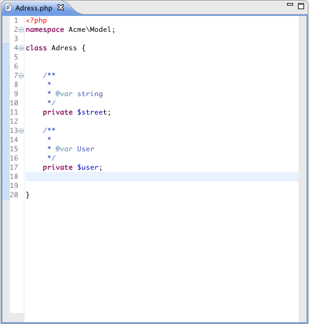
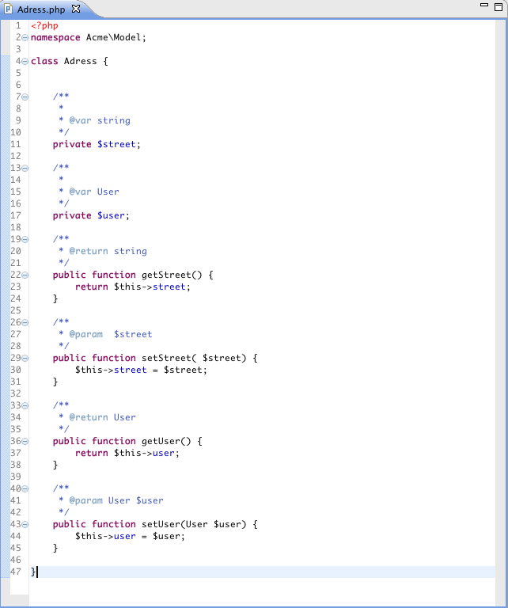

PHP Development Tools (PDT) Extensions
The PDT Extensions Plugin provides some additional (OOP) features for the Eclipse PHP Development Tools.
Class Wizard
Getter/Setter generation
To install the plugin, simple add the updatesite to your eclipse installation and install the "PDT Extensions Feature":

The "PHP Class" action can be found in the "New" context menu when right clicking on packages in the PHP project explorer.
To create Getters/Setters for class fields, use the "Generate Getters and Setters" from the "Source" entry in the top menu bar.
 Please report any bugs or feature request as a Github Issue.